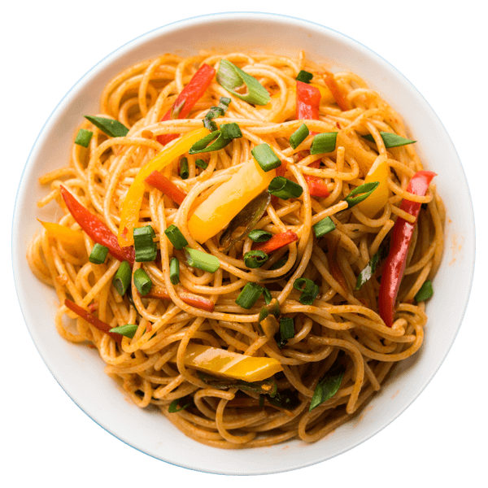

Hakka Noodles
Ingredients:
- 1 pack hakka noodles (150 gms)
- 2 tbsp oil
- 1 tbsp chopped garlic
- 2-3 spring onion stalks
- 1 medium onion (sliced)
- 1 green chilli
- 1 small carrot
- 1/2 cup capsicum (julienne)
- 6 french beans
- 1/2 cup cabbage (finely shredded)
- 1 tbsp soya sauce
- 1 tsp vinegar
- 1/4 tsp black pepper
- Salt (as per taste)
- Heat oil in a large wok on a high flame
- Add garlic and fry for 30 secs. Then add onion,Spring onion white and chilli and fry for a minute.
- Next saute carrots, capsicum, cabbage for 1-2 minutes until partially cooked.
- Add boiled noodles & sprinkle salt. Then pour soya sauce, hot sauce, chilli oil and vinegar.
- Toss everything well and fry for 2-3 minutes. Add black pepper anad spring onion greens
- Serve hakka noodles hot with gobi manchurian or chilli paneer.

Made with ❤ by
Avanti Shinde
© 2022 RecipeBook.com